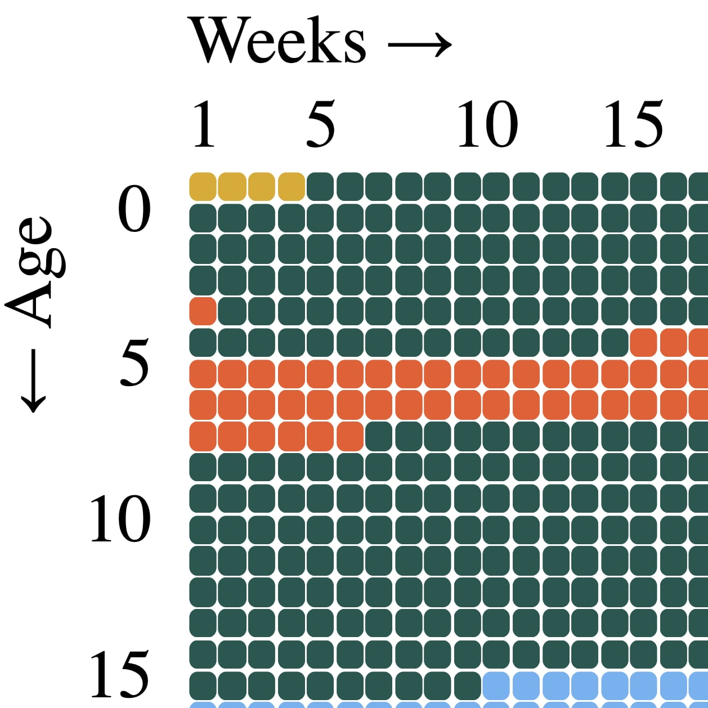
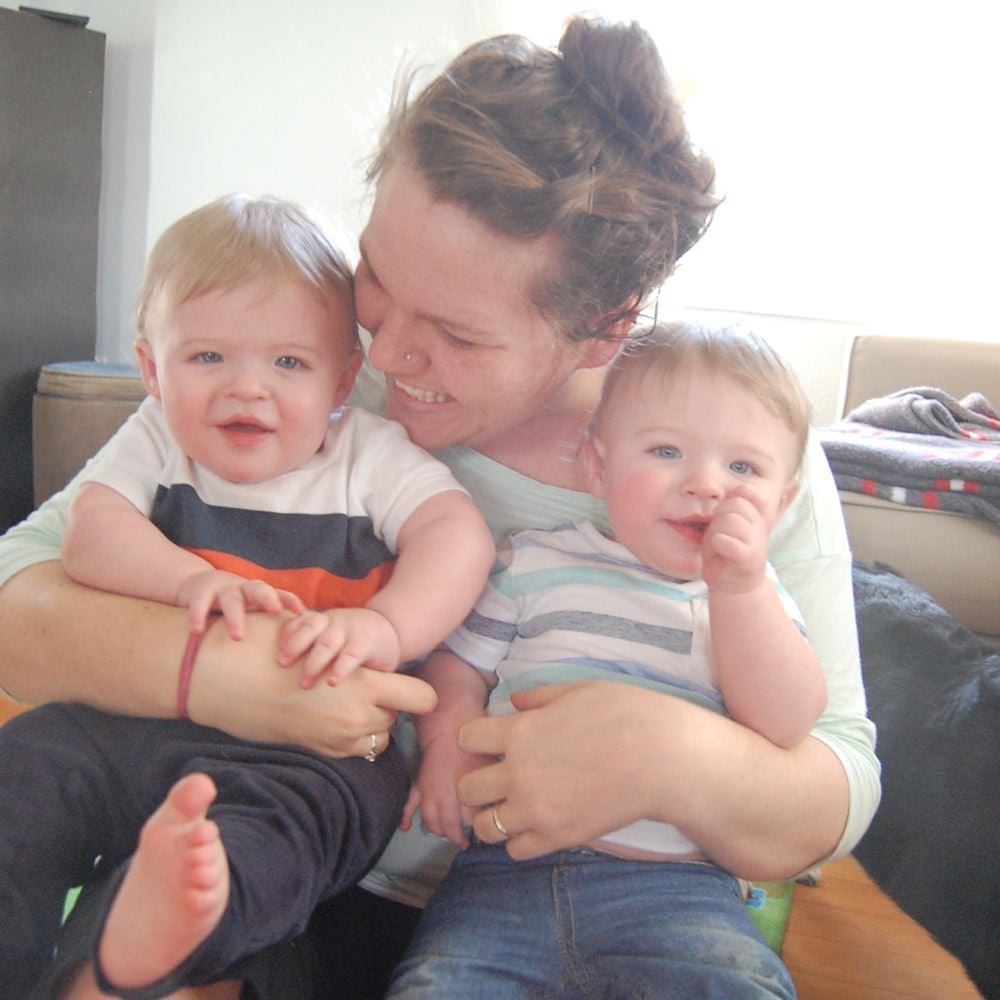

Personal Projects Welcome to Vanguard Estates An interactive choose-your-own-path story!  Life in Weeks: A Visualization Puting my life in perspective, one week at a time  One Year of Photos A nostalgic visualization